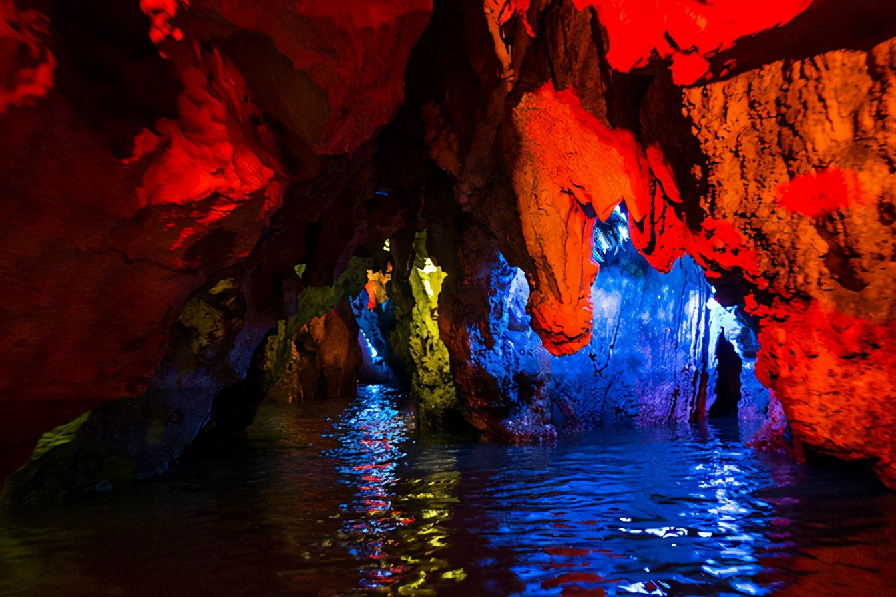
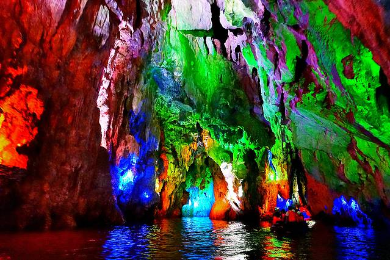
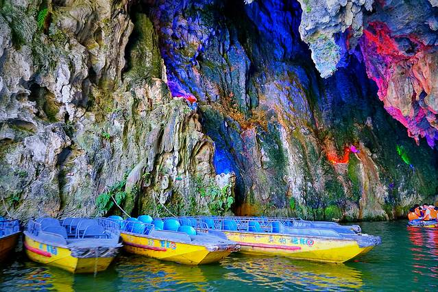
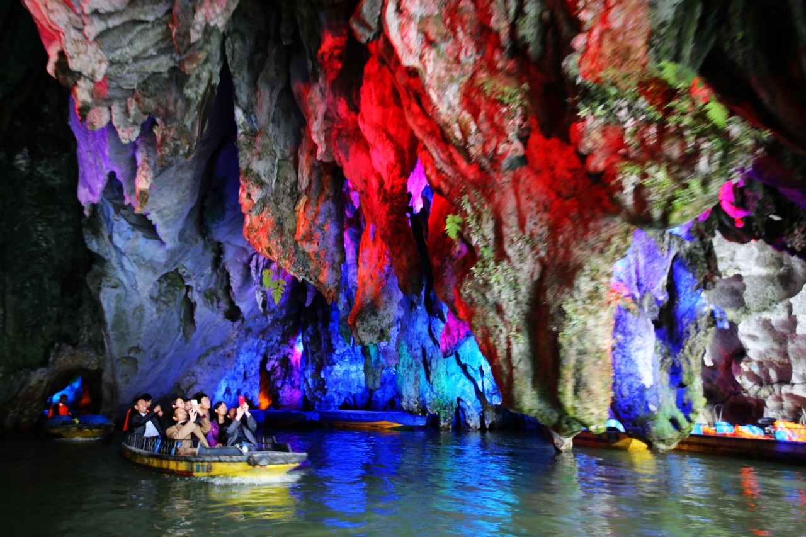
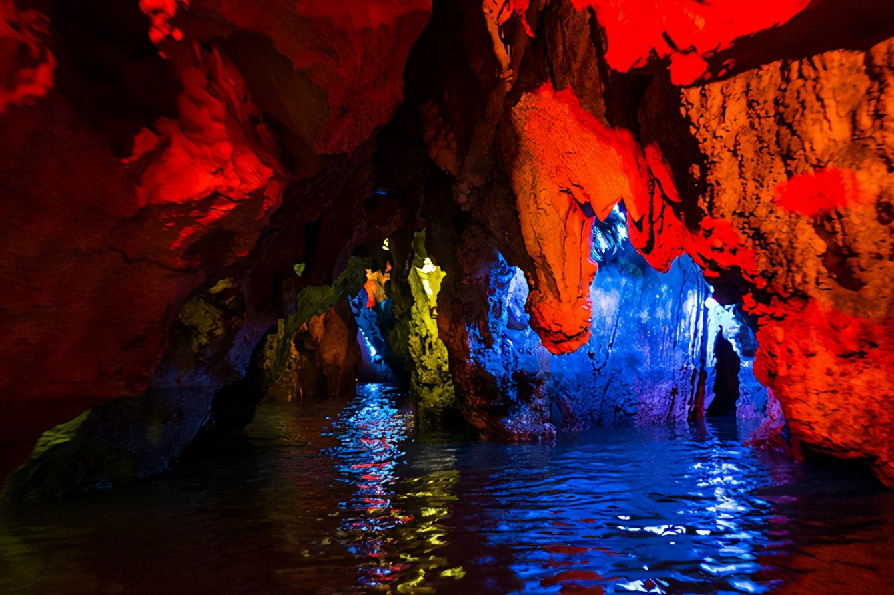
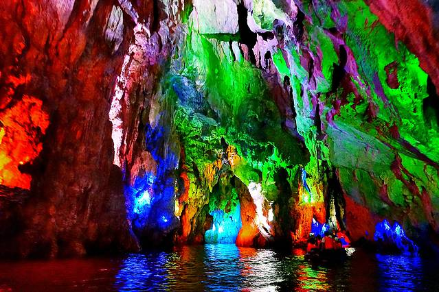
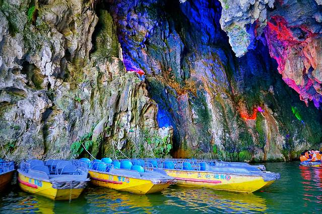
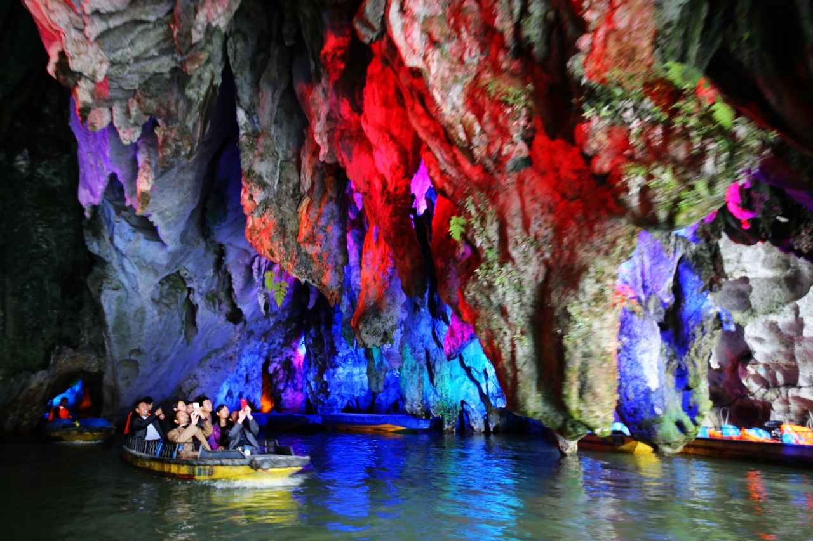

关于龙宫景区
安顺龙宫，中国最长、最美的水溶洞。洞内钟乳石奇形怪状，乘船游览，如入仙境。必看：乘船游览一、二进龙宫，观赏洞内奇景。
Anshun Longgong, China's longest and most beautiful water cave. Stalactites of peculiar shapes abound; a boat tour feels like entering a fairyland. Must-sees: Boat tour through the first and second sections of Longgong, admire cave wonders.
Anshun Longgong, la plus longue et la plus belle grotte aquatique de Chine. Les stalactites aux formes étranges abondent ; une visite en bateau donne l'impression d'entrer dans un royaume féerique. À voir absolument : Visite en bateau des première et deuxième sections de Longgong, admirez les merveilles de la grotte.
 







主要特色
- 水溶洞：乘船游览，体验奇幻的地下河。
- 龙门飞瀑：中国最大的洞中瀑布。
- 漩塘：奇特的喀斯特地貌现象，池水呈顺时针旋转。
- 观音洞：洞内有天然形成的观音像。
游玩小贴士
建议游玩时间2-3小时。洞内温度较低，夏季前往也建议携带薄外套。乘船时请注意安全。